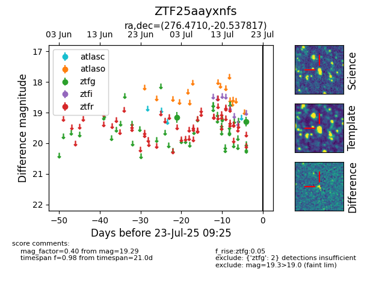

Target ZTF25aayxnfs at 2025-07-23 11:48, see:
FINK: fink-portal.org/ZTF25aayxnfs
Lasair: lasair-ztf.lsst.ac.uk/objects/ZTF25aayxnfs
ALeRCE: alerce.online/object/ZTF25aayxnfs
alt names
ZTF25aayxnfs (ztf,fink)
coordinates:
equatorial (ra, dec) = (276.4710,-20.53782)
galactic (l, b) = (11.7974,-3.85532)
photometry
last ztfg=19.29
2 ztfg detections
